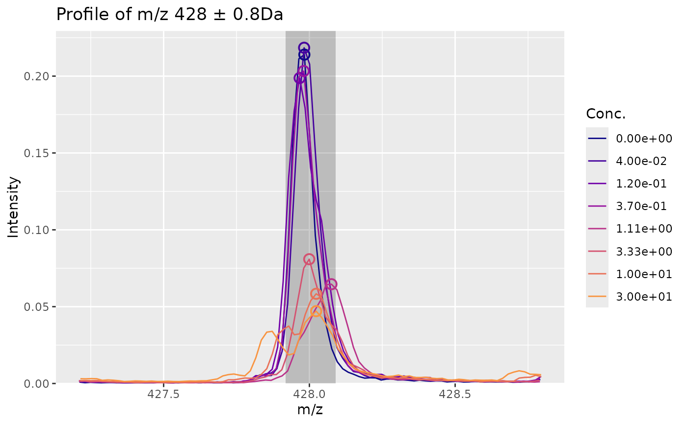
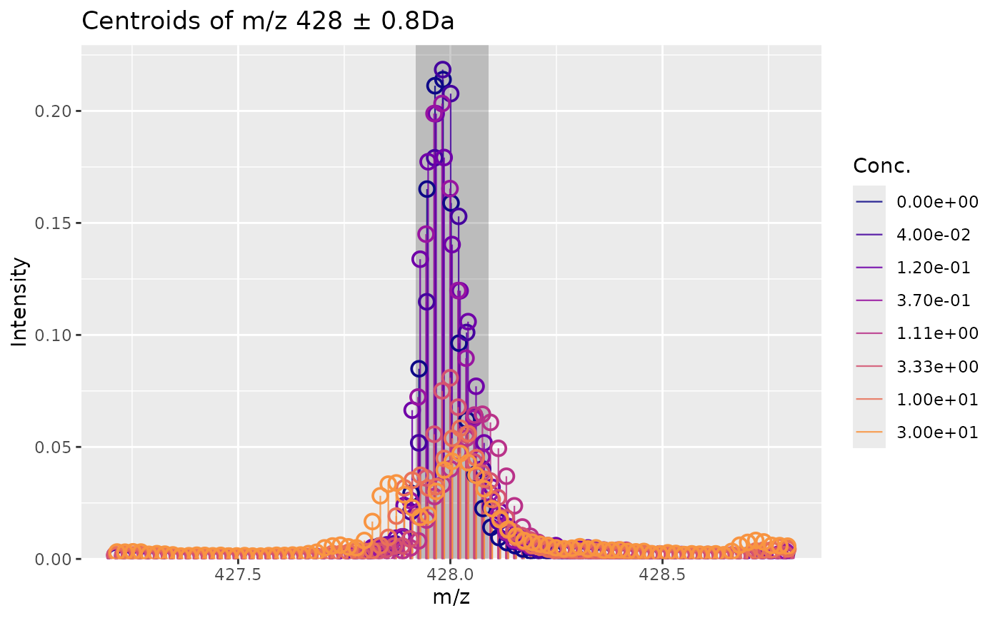

Draws the region around the peak of interest using the averaged spectra. For profile data the spectra are shown as curves, for centroided data the centroids are shown as sticks.
Arguments
- object
object of class MALDIassay
- mzIdx
numeric, index of mass of interest (see
getPeakStatistics())- tol
numeric, tolerance around peak to plot
- centroided
logical, whether the data are centroided. If
TRUEthe centroids are drawn as sticks instead of profile curves.- showPeaks
logical, whether the peaks used for curve fitting are marked with open circles (default
TRUE).
Details
With showPeaks = TRUE the peaks that are used for curve fitting are marked
with open circles: the peaks detected on the averaged spectra for profile
data, and the centroids themselves for centroided data.
Examples
data(Blank2022res)
plotPeak(Blank2022res, mzIdx = 2)

# centroided data: centroids are drawn as sticks
plotPeak(Blank2022res, mzIdx = 2, centroided = TRUE)
